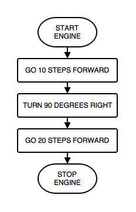
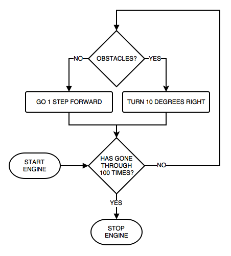
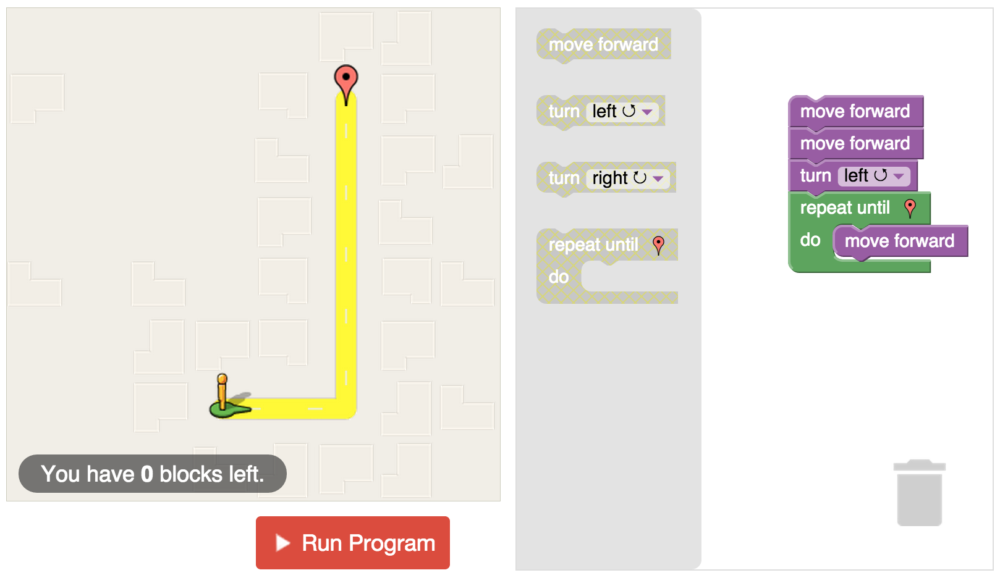

For what?
Needs specific instructions
Where to use em?
Where to use em?
When do we need them?
START ENGINE
GO 10 STEPS FORWARD
TURN 90 DEGREES RIGHT
GO 20 STEPS FORWARD
STOP ENGINESTART ENGINE
DO THE FOLLOWING STEPS 100 TIMES
IF NO OBSTACLES
GO 1 STEP FORWARD
OTHERWISE
TURN 10 DEGREES RIGHT
STOP ENGINE

What is it?
